URDF格式的articulation模型转fbx格式
所需软件
-
Blender （这里使用Blender 2.83版本）
-
Unity 2020.1.0f1c1（Unity用于fbx文件验证，其他版本应该也可以）
评注（Wenqiang）
我们目前对joint的标注已基本unity化，unity导入articulation时，只需要part的hierarchy，其具体的转轴可以在unity里面调，而且比较方便（thanks to ArticulationBody这个feature），所以下述步骤实际上只需要1-2-3-11-12即可，在第二步中打开urdf，根据urdf数值调整每个part的位置和朝向。
在unity中如何标注joint，请参考这篇文章。
详细步骤
-
打开Blender，删除默认的cube, camera和light三个部件，导入物体obj模型，如果是articulation物体，需分别导入各个part的obj
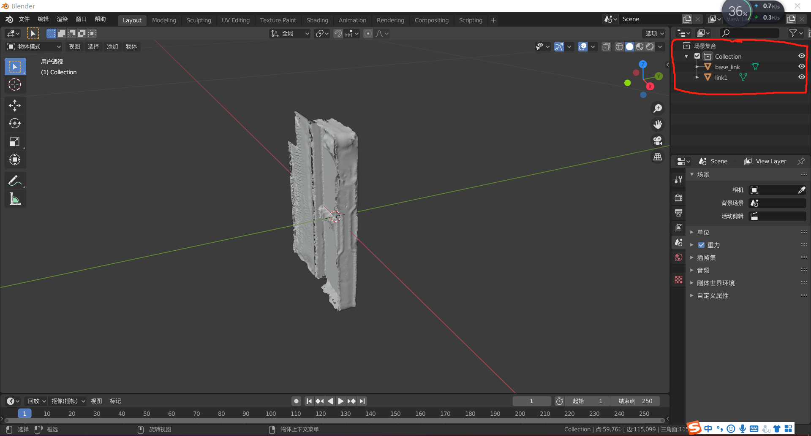
-
（optional）由于本教程示例的urdf由unity的ROS#插件制作而来，所以其坐标系会和blender默认有所不同，导入时初始位置会有X旋转90度的情况，需手动修正
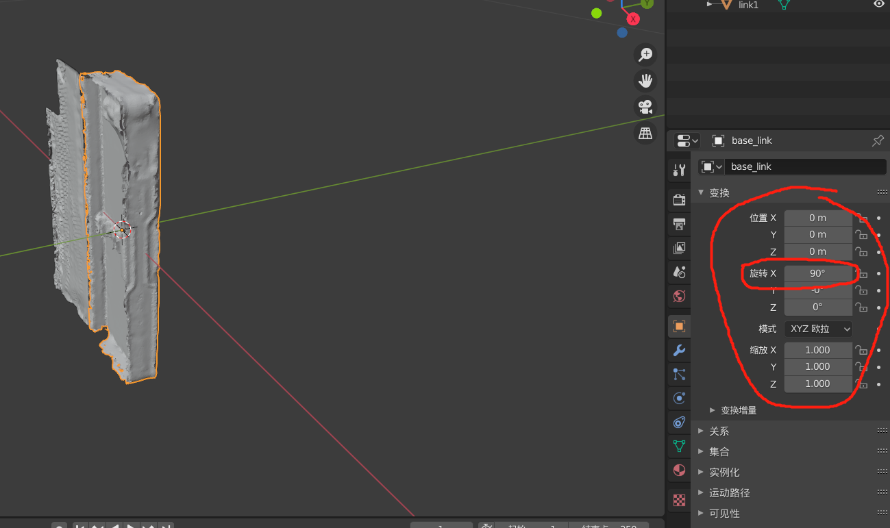
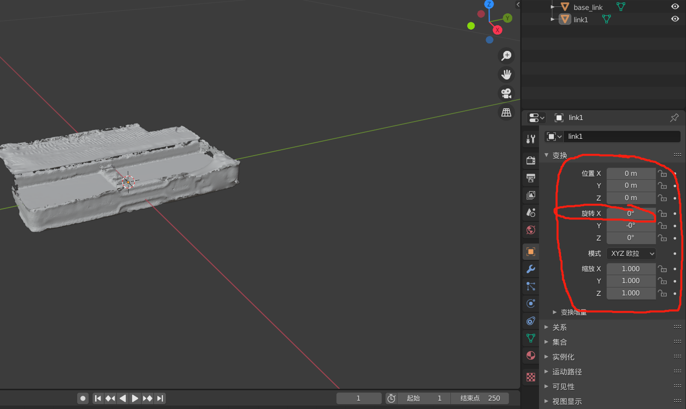
-
打开纹理渲染，确认物体纹理导入正确
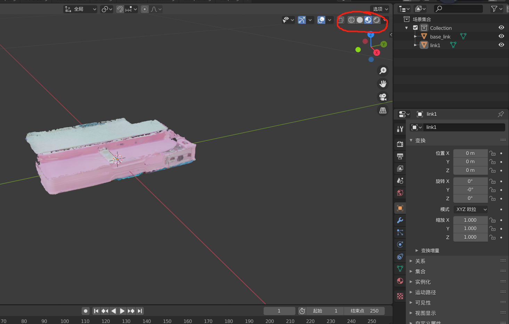
-
为articulation物体建立运动结构，如图所示，把base_link作为link1的父节点
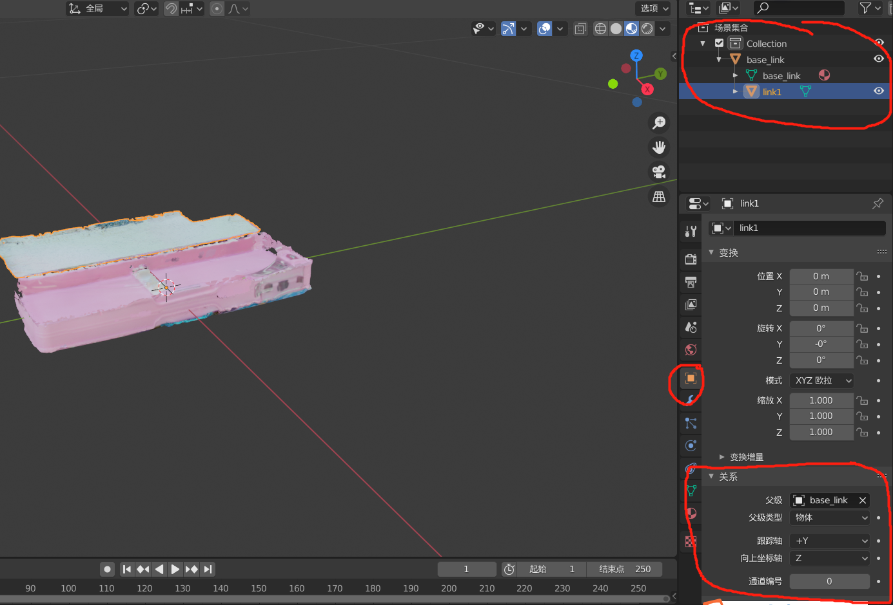
-
之后为可运动part建立旋转（或平移）的运动模式，首先打开urdf文件，获取link1运动的类型、旋转中心、旋转方向和旋转limit，即type, origin xyz, axis xyz, limit
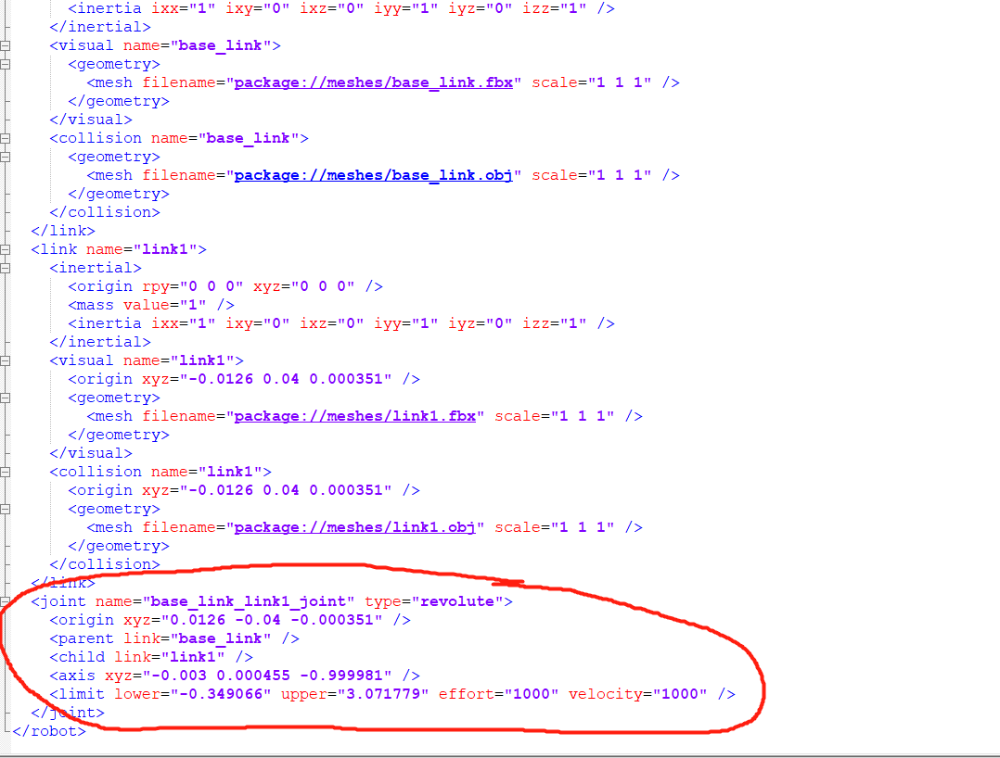
-
在blender中选择左侧游标，根据旋转中心和转轴方向为游标设置位置和方向参数，这里需要注意，同上文所说，我们制作的urdf在坐标系上略有不同，所以这里三个值输入顺序需要有一个变化，具体为：旋转中心(x,y,z) -> (y,z,x) 旋转方向 (r,p,y) -> (p,y,r)(注：该变化在不同source的urdf中并不完全一致，还是以手调为准)
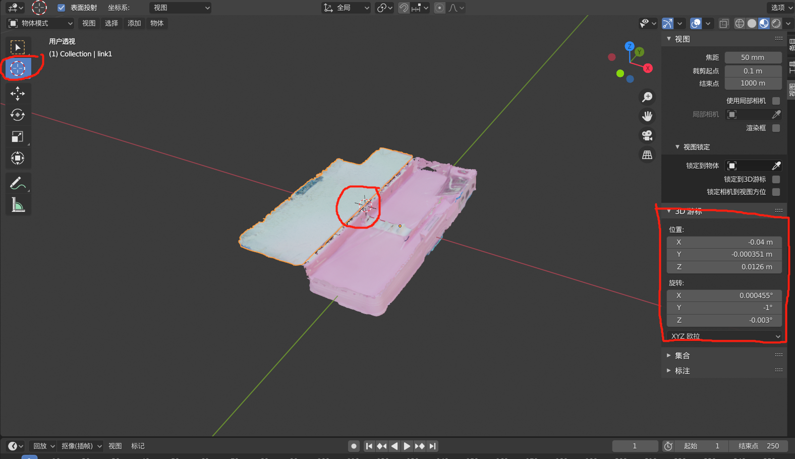
输入后可以看出，3D游标位置处于link1旋转的中心点
-
验证旋转中心及位置的正确性，选择左侧旋转，旋转位置选择3D游标，略微转动物体，可以看出link1旋转模式符合预期
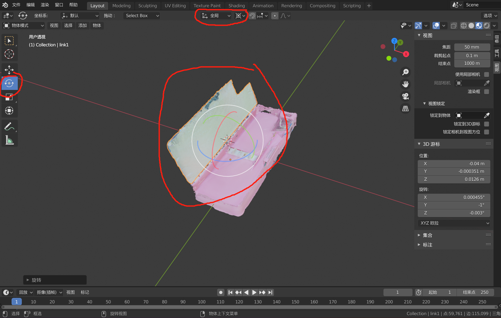
-
添加物体旋转约束，选择link1，在右下角菜单栏选择“物体约束属性”-“添加物体约束”-“限定旋转”，这里我们选择Y限值（刚刚旋转演示中的绿色旋转方向）为urdf中的两个limit（角度数值需要转换）
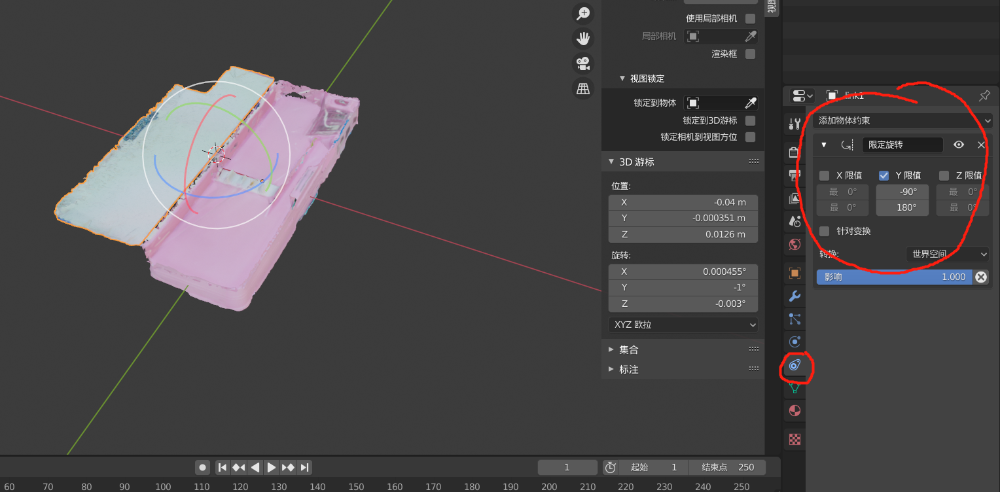
-
再次旋转物体，可以发现，当旋转超过限值后，将出现part脱离现象
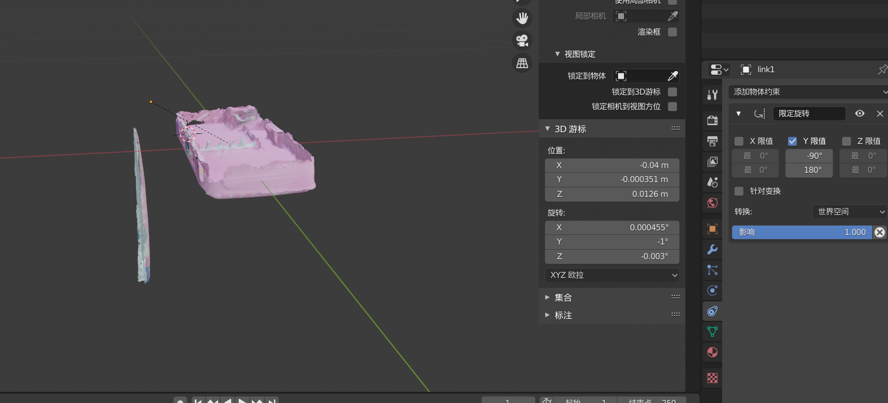
-
刚刚只是设置游标验证运动方式，现在要将旋转中心和方向记录在link1中。选中link1，鼠标移至游标位置右键，选择设置原点，原点->3D游标，即可将3D游标位置设置为物体旋转点，如图所示，右上角位置中已经变成了3D游标位置
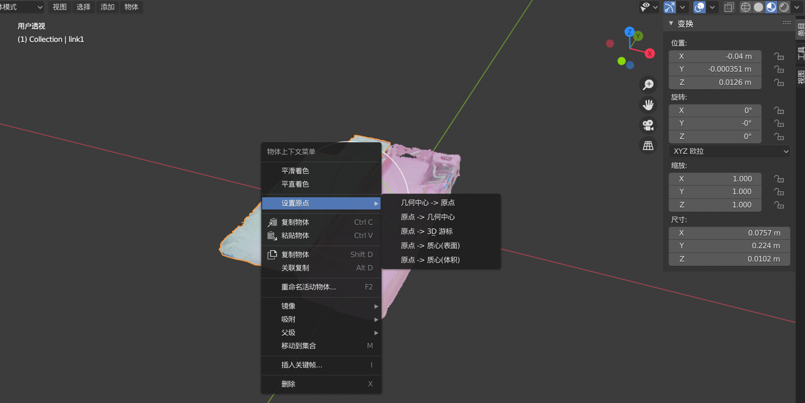
-
将纹理写入模型中，在右下角选择纹理，将纹理打包按钮点亮，保证纹理被内嵌到模型里
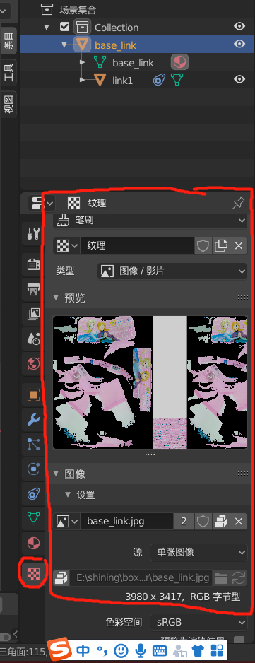
-
导出fbx，点击文件-导出-fbx，路径模型选择“复制”，并将右侧内嵌纹理点亮，导出为box1.fbx模型文件
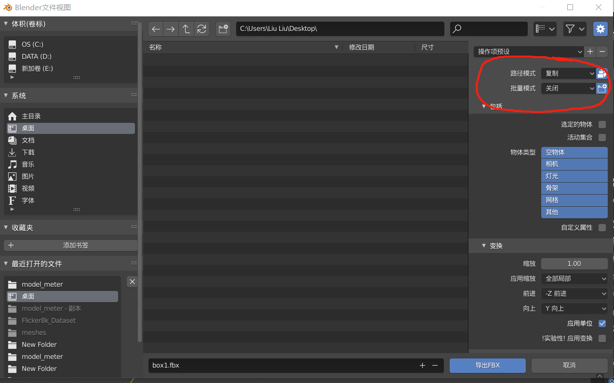
-
（optional）在Unity里验证fbx，打开unity工程，导入box1.fbx，选择旋转，可以验证link1旋转方向是否正确
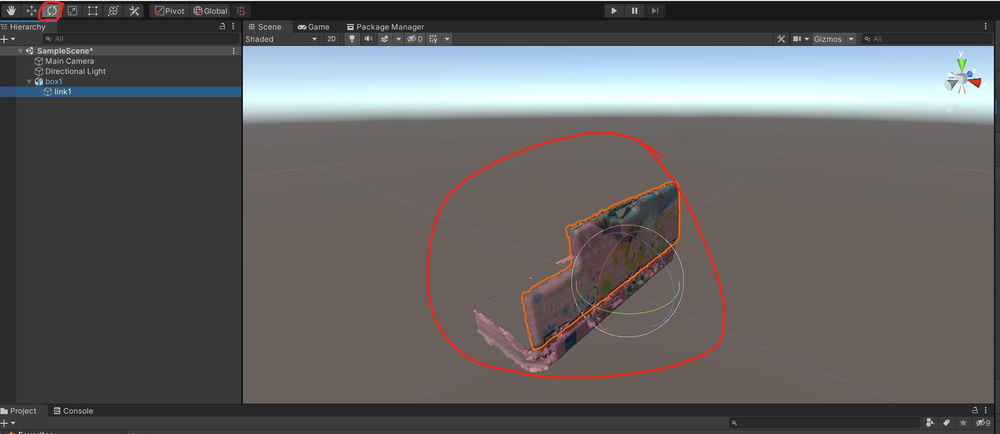
至此，urdf模型导出为fbx模型完成